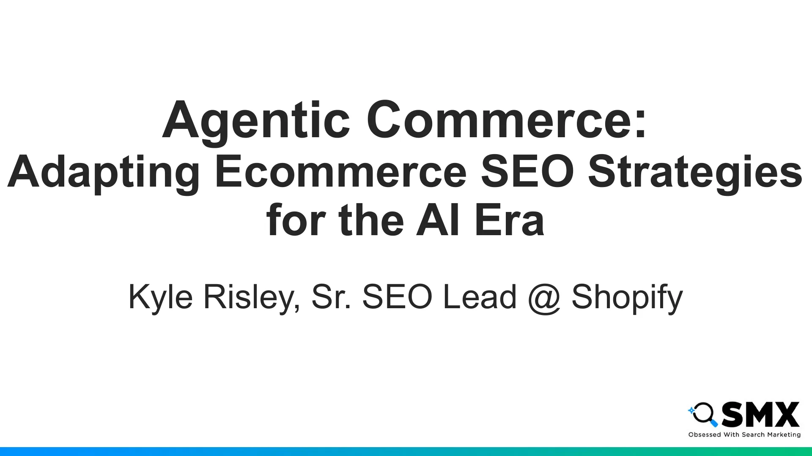
1Hi everyone, my name is Kyle Risley. I’m a Senior SEO Lead at Shopify, and today I’ll be talking about SEO strategies for agentic commerce.
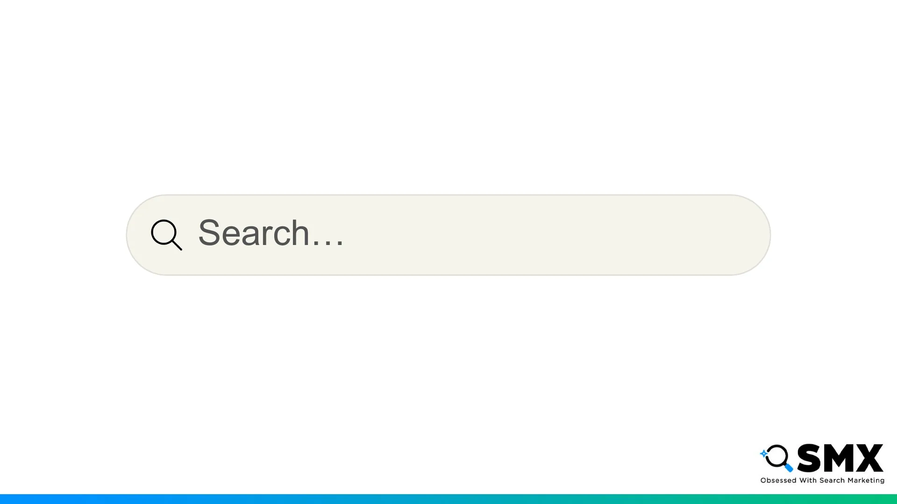
2For the last 20 years, the search bar was the front door to ecommerce.
Now AI is opening a new door.
People are moving from keywords to detailed prompts and they expect rich, customized responses.
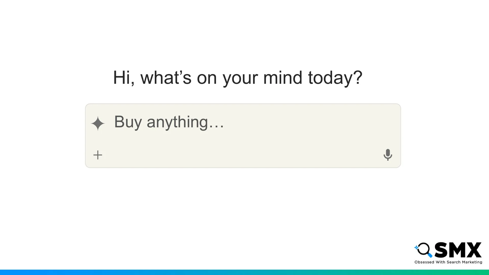
4Naturally, this is changing what people expect from their shopping experiences.
AI is reshaping how customers discover, research, and purchase products online.
This development is often referred to as agentic commerce.
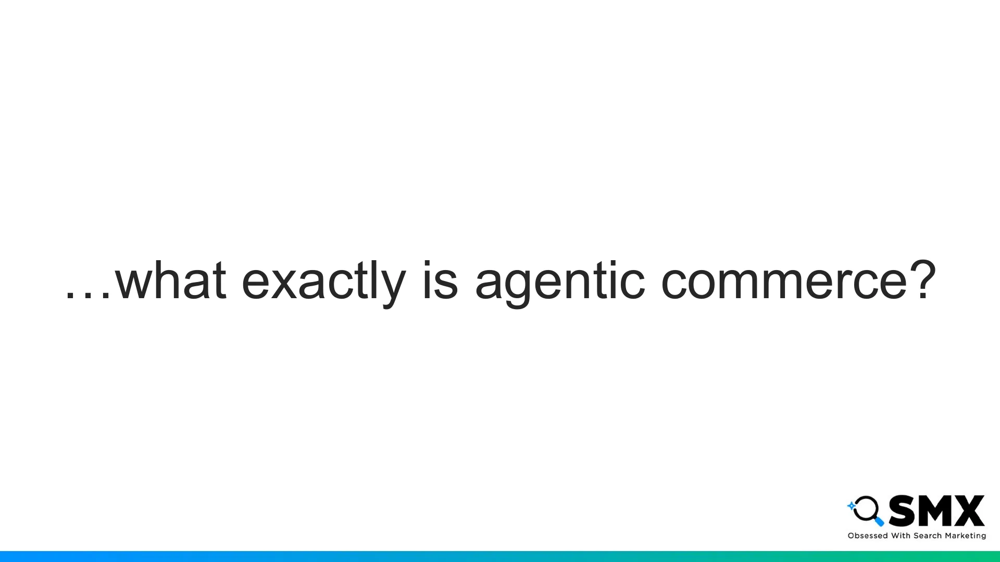
5But what does that mean? What exactly is agentic commerce?
There isn’t a single definition, but
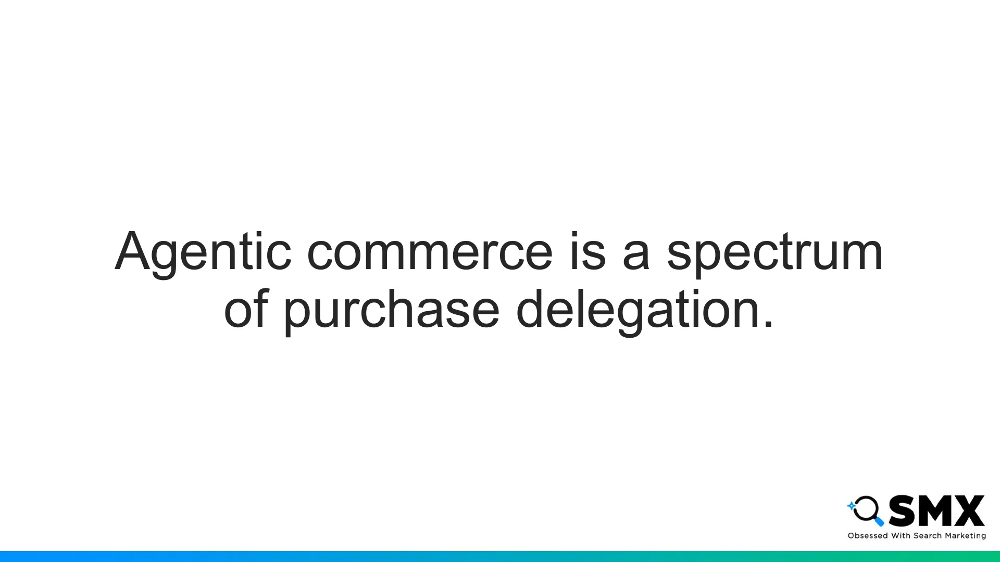
6I think of agentic commerce as a spectrum of purchase delegation, where users gradually delegate more parts of the purchase process to an AI agent.
Today I’ll be breaking this spectrum down into four levels.
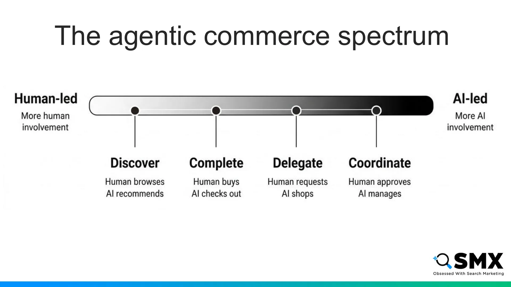
7Discover, Complete, Delegate, and Coordinate. At each level, the AI agent takes on a larger role in the purchasing journey while the customer stays in charge of key decisions.
Commerce is a series of complex negotiations across inventory, pricing, authorization, payment, and fulfillment.
Commerce protocols help coordinate these negotiations.
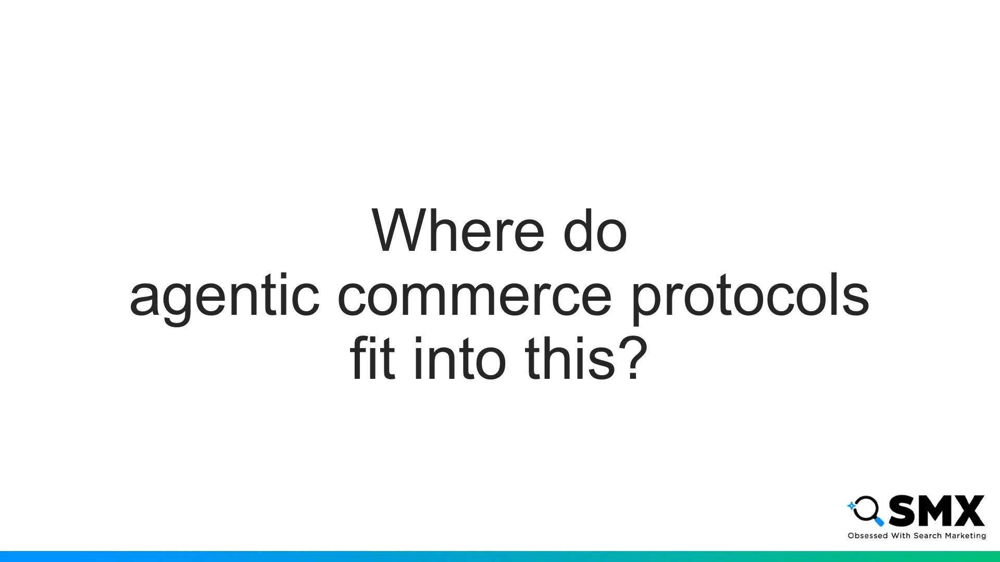
8You may have heard of protocols like Universal Commerce Protocol or Agentic Commerce Protocol.
For simplicity, I’ll be focusing on Universal Commerce Protocol, or UCP, for my examples today.
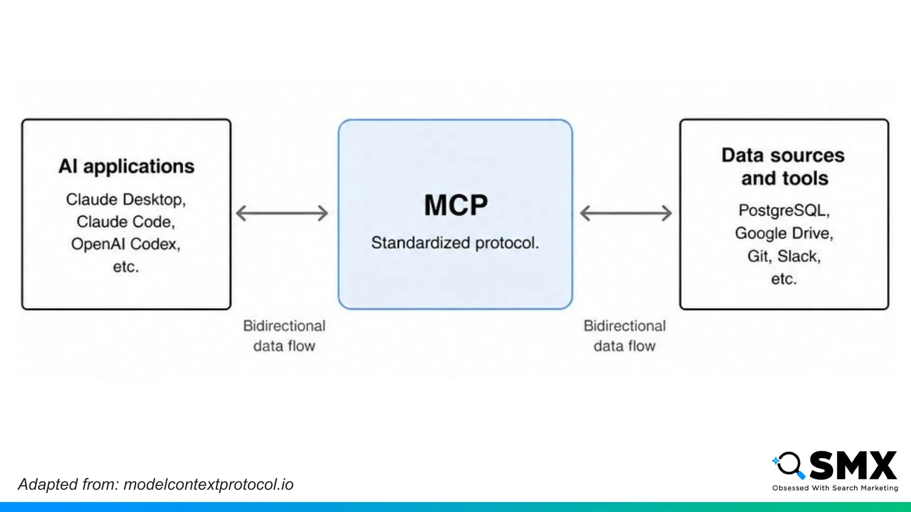
9Just like how Model Context Protocol, or MCP, provides AI applications with standardized access to tools and data,
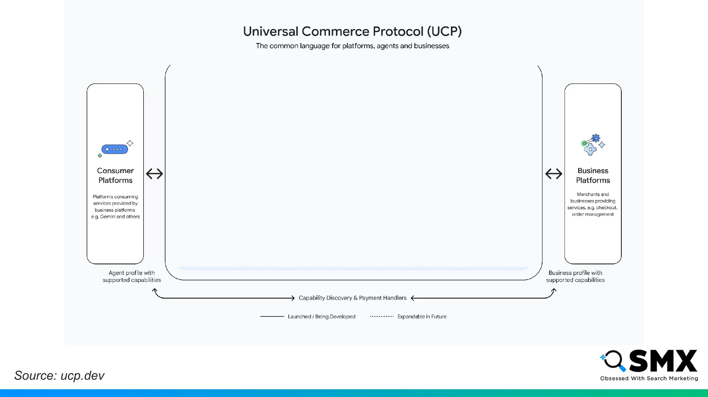
10Commerce protocols provide standardized access to commerce workflows between agents and businesses.
UCP was co-developed by Google and Shopify as an open standard for agentic commerce. It’s designed to support the broader shopping journey from discovery to checkout through post-purchase touchpoints like order management.
It’s technical council includes Amazon, Etsy, Meta, Salesforce, Stripe, Target, and Walmart.
UCP has four core concepts: services, capabilities, extensions, and transports.
A website can declare the services it supports, like shopping.
And each service includes capabilities, like checkout.
Capabilities can include extensions, like discounts.
And the site can declare supported transports, like REST, MCP, A2A, or embedded.
Now that we know what agentic commerce is and the basic components of a commerce protocol, let’s look at an example of how these concepts work together to influence the user experience.
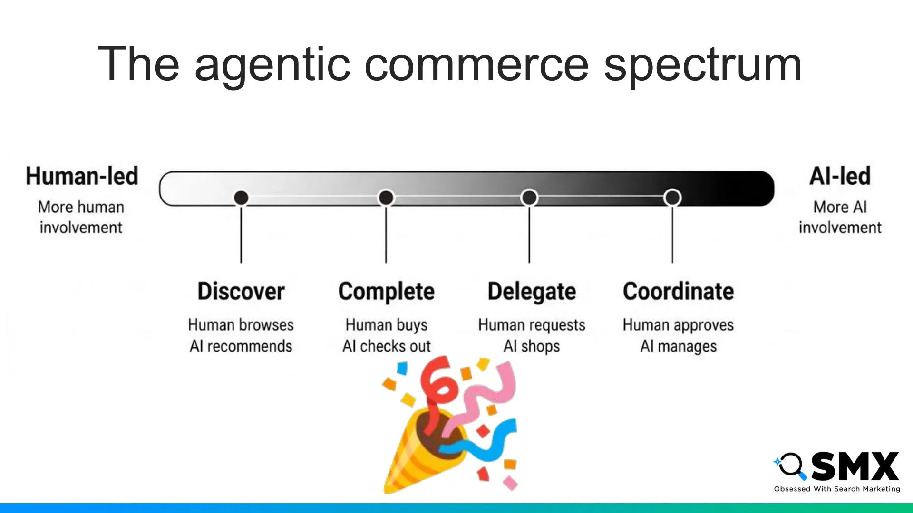
11Let’s say a friend has a birthday coming up, and I want my agent’s help finding a gift.
We’ll walk through four scenarios, one for each level of agentic commerce.
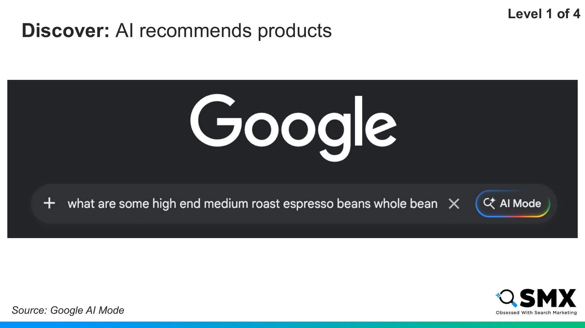
12Level one, Discover, is the most familiar. It’s where most AI-influenced shopping happens today.
At this level, I’m still doing most of the work.
Say I want to buy them espresso beans. I open Google AI Mode and ask for ideas.
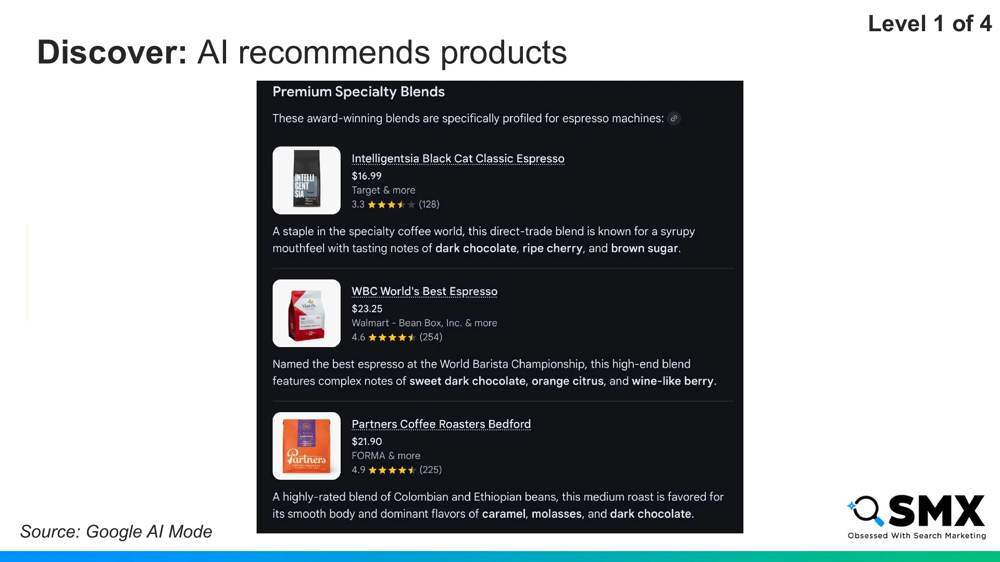
13The agent suggests options with price and availability, but I still choose the product,
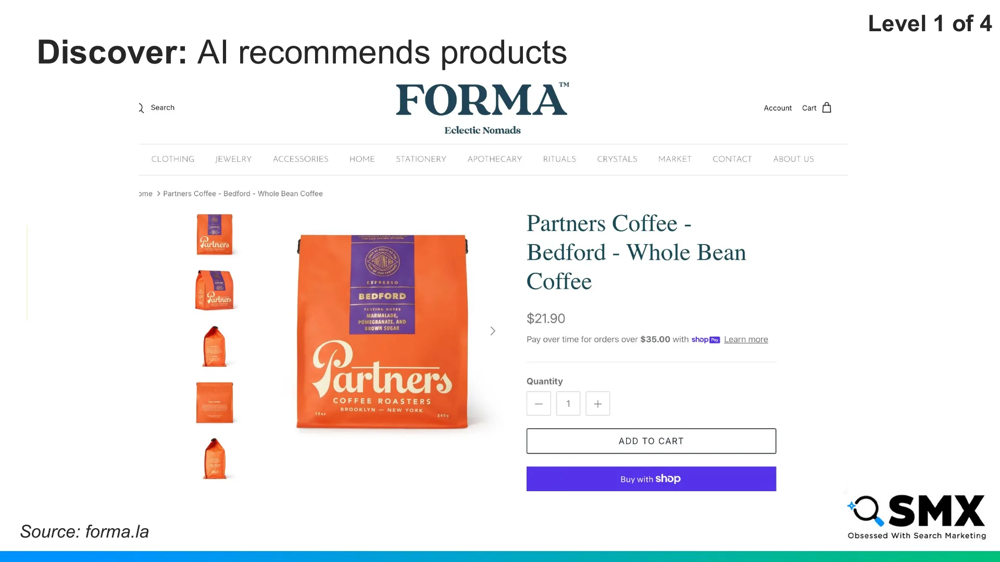
14I click through to the merchant’s site, and I complete the purchase myself.
The agent helps me decide, but I still drive the transaction.
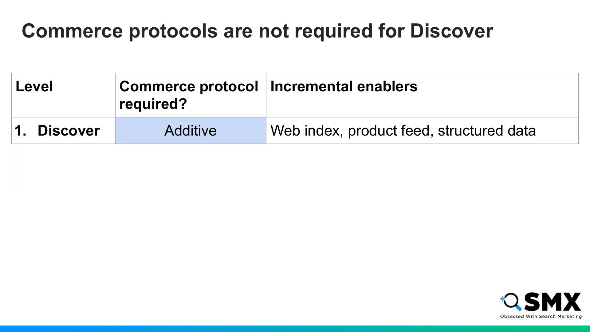
15At the Discover level, classic ecommerce SEO remains essential.
Indexing, product feeds, structured data, and detailed page content act as enablers to help agents understand and recommend your products. Most optimization work still happens here.
Commerce protocols are not required at this level, but they are additive. UCP’s catalog capability lets agents search products, browse categories and filters, and compare prices on a merchant’s site.
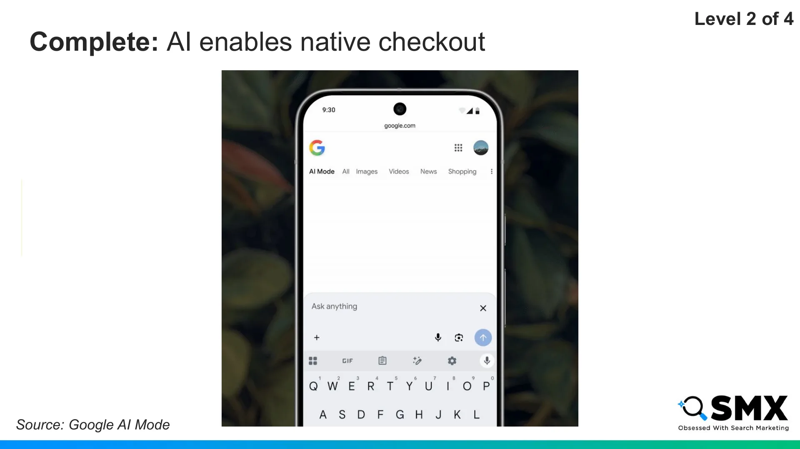
16At level two, Complete, the agent still helps me discover products, but checkout moves into the chat window. Here, commerce protocols shift from additive to required.
Maybe my friend has a Miami trip coming up, and I want to buy them carry-on luggage.
The agent recommends a few options. I choose the Monos carry-on, click “buy,” and complete checkout directly in chat.
I still decide what to buy, but the agent facilitates checkout. Of course, if I prefer to visit the merchant’s website, those links are still available to me.
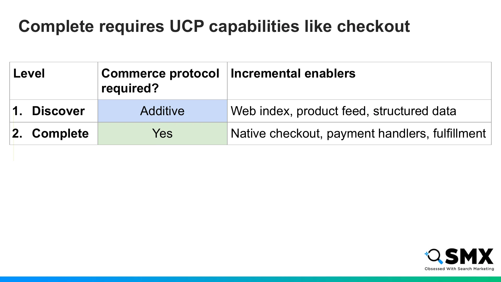
17This experience leverages UCP capabilities like checkout and extensions like fulfillment.
The agent knows Monos supports agentic checkout in part because of its UCP profile.
The UCP profile tells agents which services and capabilities a site supports, and whether it can fulfill the user’s request.
For example, if the agent needs to pay with Visa, it can check the UCP profile to confirm Visa is accepted.
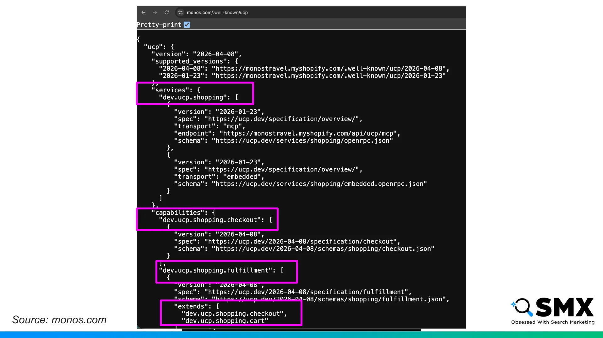
19Here’s the Monos UCP profile, with declarations for the shopping service, checkout capability, and fulfillment extension.
And further down we can see the accepted payment methods, which include Visa.
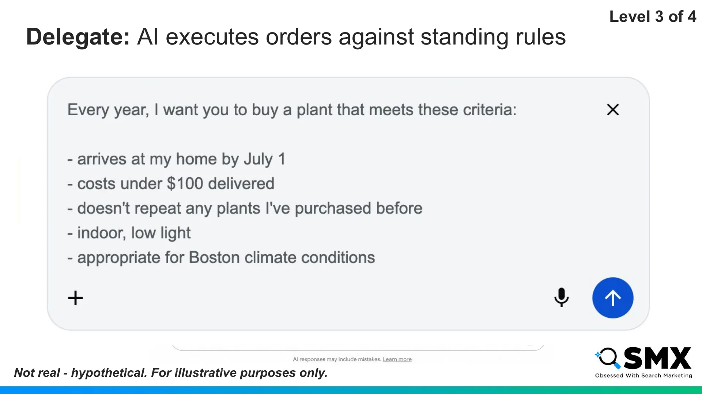
20At level three, Delegate, the agent operates more autonomously within a set of standing instructions.
At this point, we’re mostly describing future-state scenarios. But this is where agentic commerce is headed, and where the rails are being built.
For example, maybe my friend loves plants, and I want to gift them one every year for their birthday.
I might ask my agent to buy an indoor plant every year, delivered by July 1, under $100, low-light friendly, suitable for Boston, and never a repeat of a previous purchase.
I can still approve the purchase, but I no longer need to initiate the process. And if I didn’t want to approve the purchase at the time of payment, I could pre-authorize it.
This is where guardrails become essential.
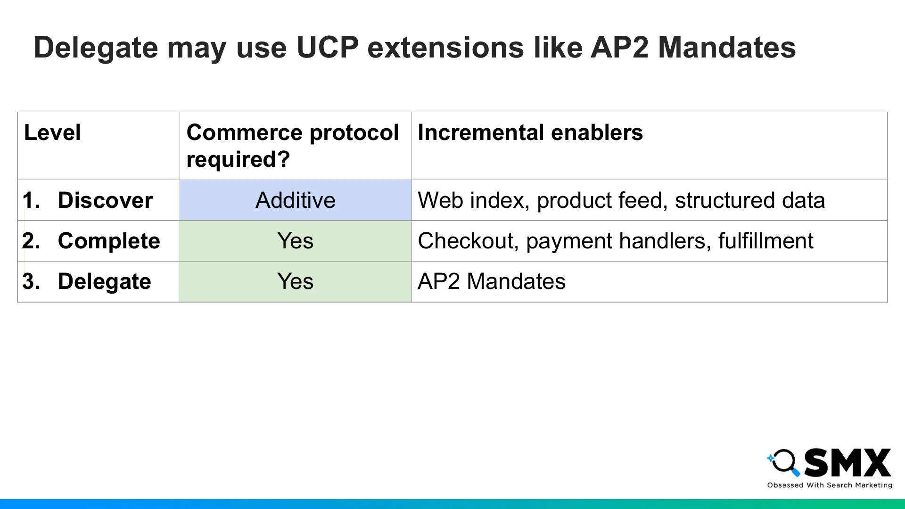
21The Delegate level is enabled by the trust layer.
If a customer isn’t manually approving checkout, merchants need to verify several things, including: if the agent is authorized, if the products match the instructions, and if the order stays within spending limits.
The Agent Payments Protocol, or AP2, is an open protocol developed by Google that could be used to enable these transactions.
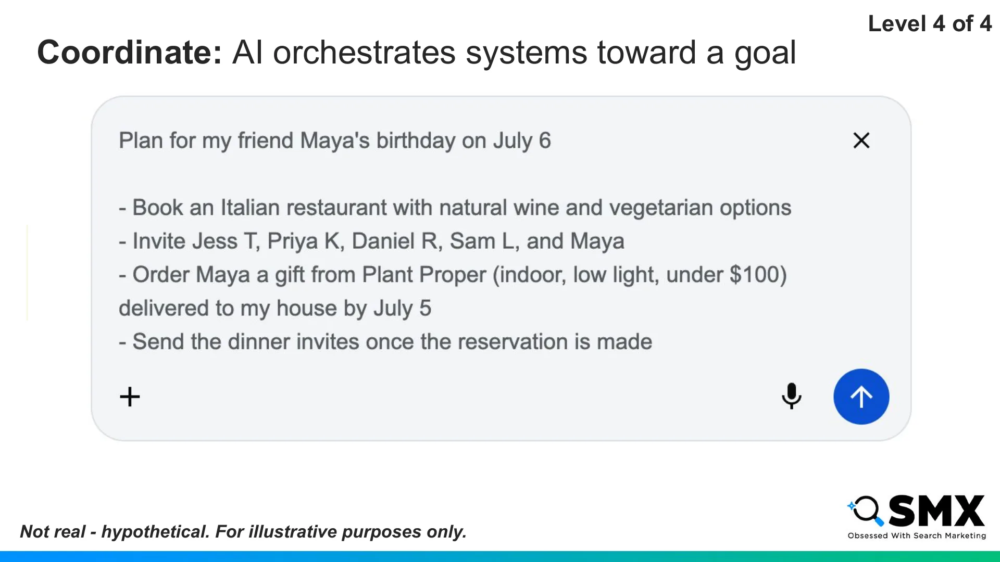
22At level four, Coordinate, I can ask my agent to build an entire birthday plan.
I ask it to book an Italian restaurant with vegetarian options, pick a gift, and send the invites.
Once I approve, the agent books everything.
At this stage, the agent orchestrates calendars, reservations, payments, and commerce platforms toward a broader goal.
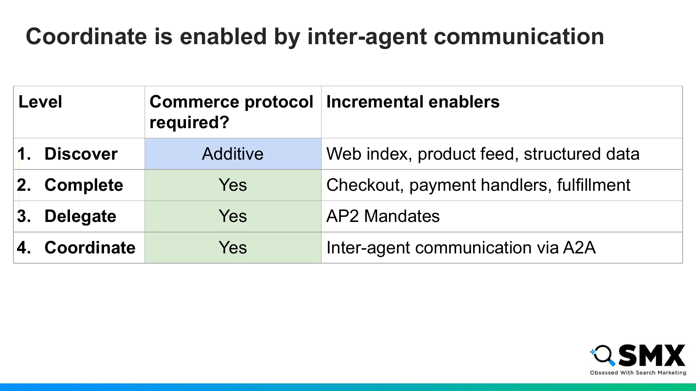
23Coordinating multiple agents requires inter-agent communication, which could be supported through protocols like Agent to Agent, or A2A, an open standard originally developed by Google.
This may sound like a lot, but there’s a good chance you won’t implement it all yourself.
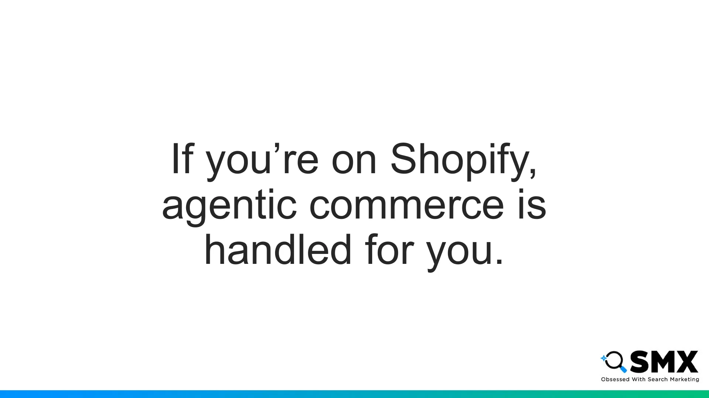
25If you’re on Shopify, integrations with Google AI Mode, Gemini, Copilot, ChatGPT, and other surfaces are handled for you.
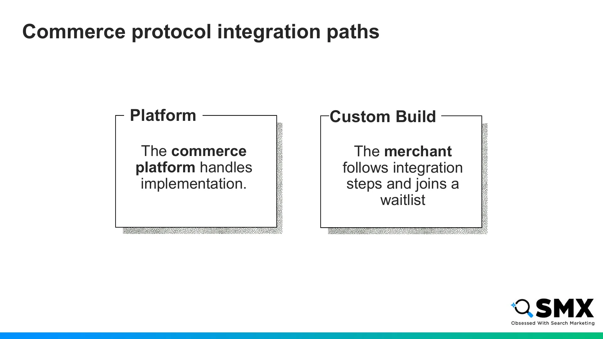
26If you’re on another commerce platform, check with them to understand their current status with agentic commerce integrations.
If you’re on a custom build, you’ll need to follow Google and OpenAI’s integration steps and join their activation waitlists.
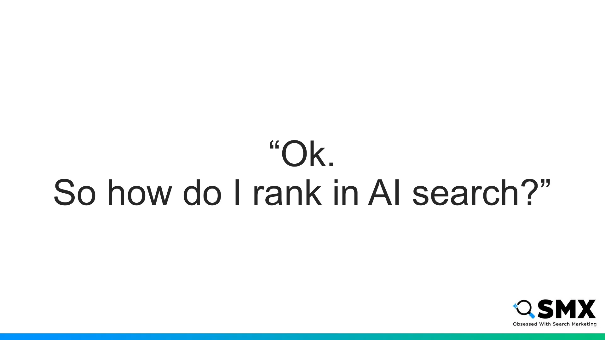
27So now that we’ve covered what agentic commerce is, and how it changes the customer search experience, let’s get into how you can show up when users are searching for your products.
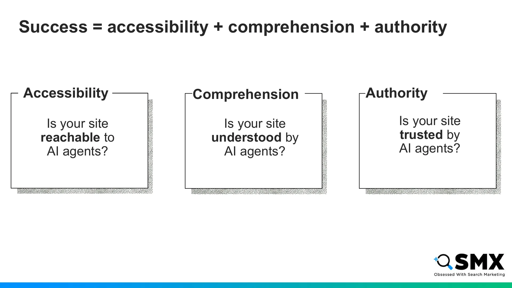
28I think about AI visibility in three pillars: accessibility, comprehension, and authority.
Accessibility: can agents reach your site?
Comprehension: can they understand your products?
Authority: do they trust your brand?
They’re the same principles of great SEO, applied to a wider cast of crawlers and agents, some of whom behave a little differently than Googlebot or Bingbot.
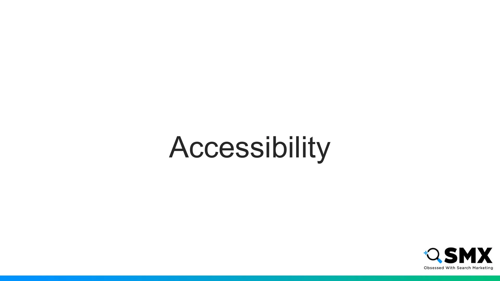
29We’ll start with accessibility.
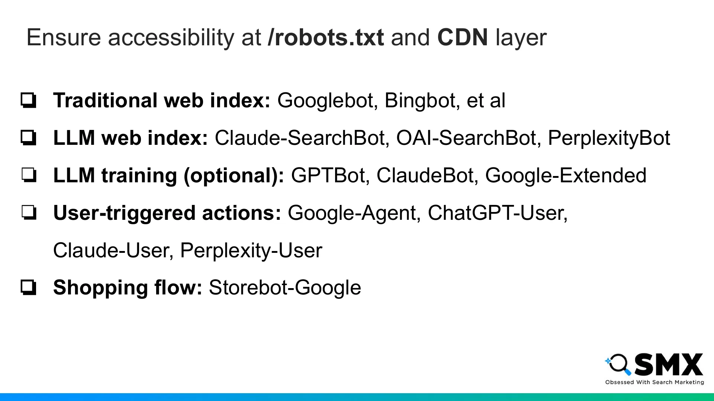
30First, make sure agents aren’t blocked by robots.txt or your CDN.
If your CDN is managed by your host or platform, it’s worth confirming that the relevant user agents have access to your site.
Beyond traditional search crawlers, Anthropic, OpenAI, and Perplexity have crawlers for their own search indexes.
These are distinct from LLM training crawlers.
You don’t need to allow LLM training crawlers for your site to be accessible, but I generally think commerce brands should consider it.
There are also user-triggered agents. These visit your site when it’s fetched as a citation in an LLM answer, or when an agent takes action on behalf of a user.
And finally, Google has a distinct user-agent for validating product data.
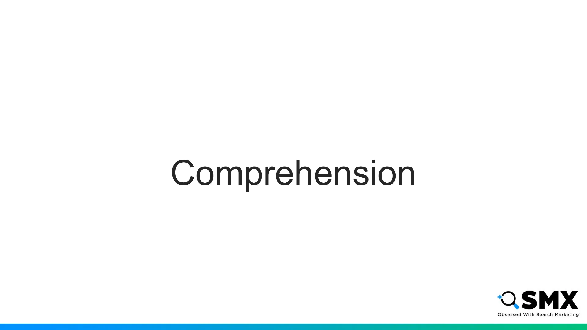
31Once agents can access your site, the next question is whether they can understand it.
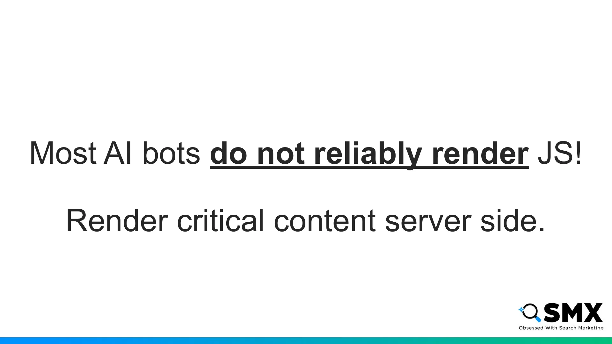
32As a reminder: most AI bots are not rendering JavaScript.
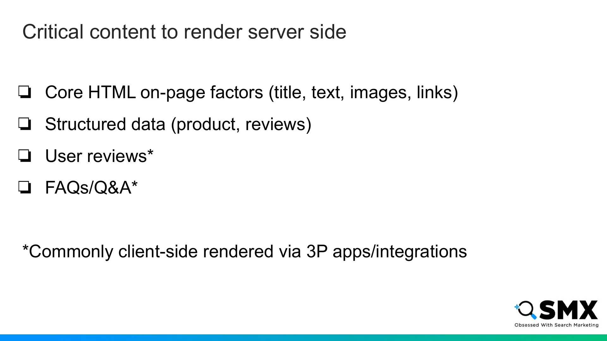
33To account for this, render critical content server-side.
Your critical content includes:
Your core HTML
Structured data
User review modules
FAQs and Q&A modules
FAQ, Q&A, and review modules often come from third-party apps and render client-side, so double-check them. Some of these apps have options for server side rendering that may be available.
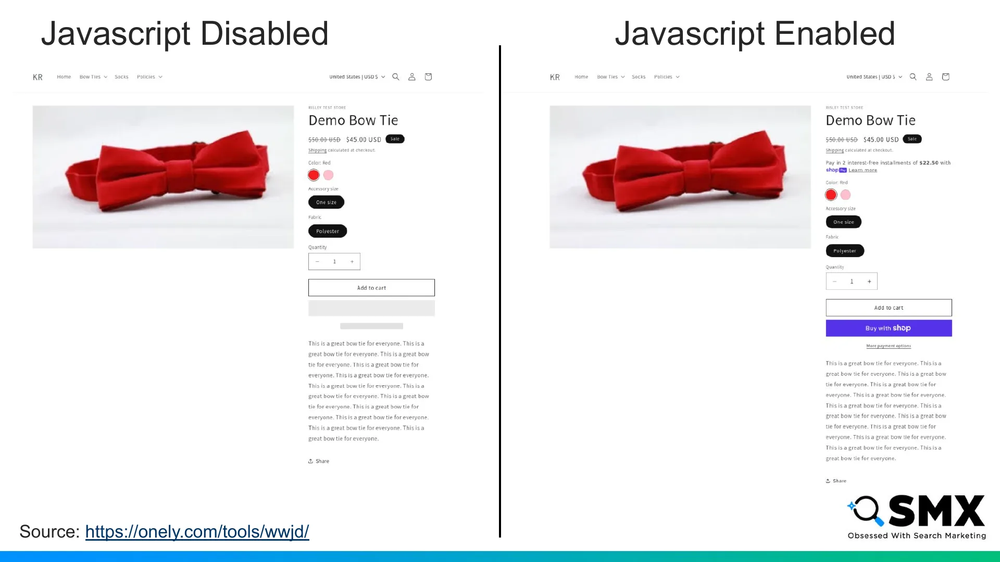
34When auditing your rendering, here’s an example of what you want to see: no major difference in critical content rendering when javascript is disabled.
This page is not using JS to render any critical page content.
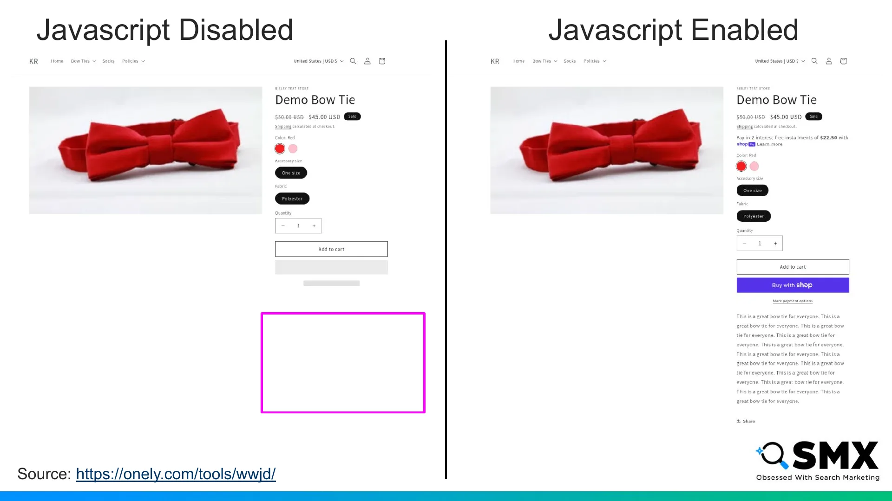
35Here’s what you don’t want to see. On the left, the product’s description isn’t rendered when JS is disabled. This is what you should look out for and fix.
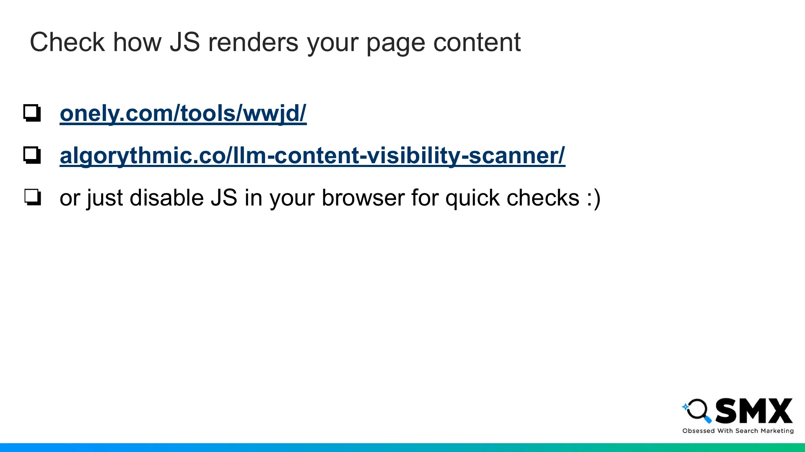
36Here are two free tools for debugging JavaScript rendering.
The first is What Would JavaScript Do, from Onely, that’s where the previous screenshots were from
The second is the LLM Content Visibility Scanner from Lily Ray’s company, Algorithmic.
You can also just disable JS in your browser for quick checks.
These changes don’t just benefit AI crawlers - they are also appreciated by Googlebot and Bingbot, even though they have more sophisticated rendering capabilities.
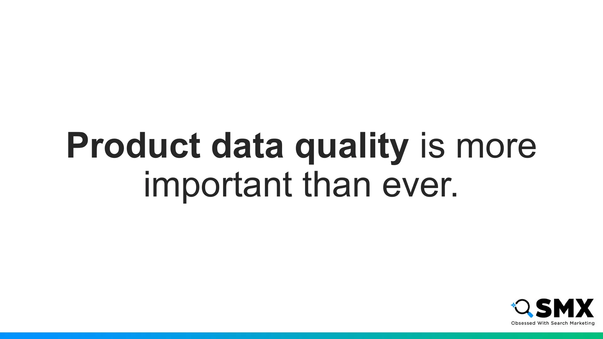
37And if we’re talking about Comprehension, we have to talk about product data quality.
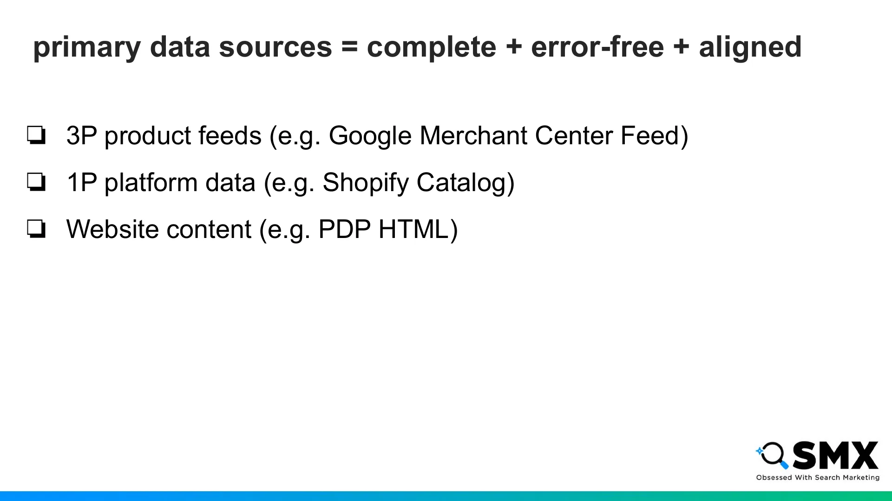
38The three most important surfaces to audit are product feeds, platform data, and website content.
Your product feeds, like your Google Merchant Center feed, are piped directly into shopping graphs and product retrieval systems.
Your platform data is the information entered into your PIM, CMS, or commerce backend.
This is especially important if your platform is packaging that data and feeding it to AI commerce surfaces like ChatGPT, Copilot, or Google AI Mode.
Finally, your website content should match your feeds and platform data, so every source reinforces the others.
For example, you don’t want one price showing in your product feed and a different price showing in your website content.
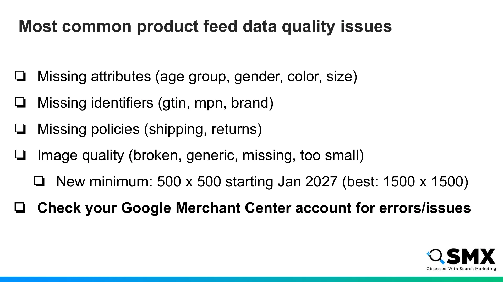
39Common feed quality issues include:
Missing attributes.
Missing identifiers.
Missing shipping or return information.
Image quality issues.
As a heads up, starting next January, Google Merchant Center’s new minimum image size will be 500 by 500 pixels. But 1500 by 1500 should still be your goal for best performance.
The simplest way to audit this is directly with the feed consumer, like Google Merchant Center or Microsoft Merchant Center. Focus on issues that are causing demotions or disapprovals.
Another factor that’s more important than ever is including complete dimensions and specs on your PDPs.
Here’s an example to demonstrate
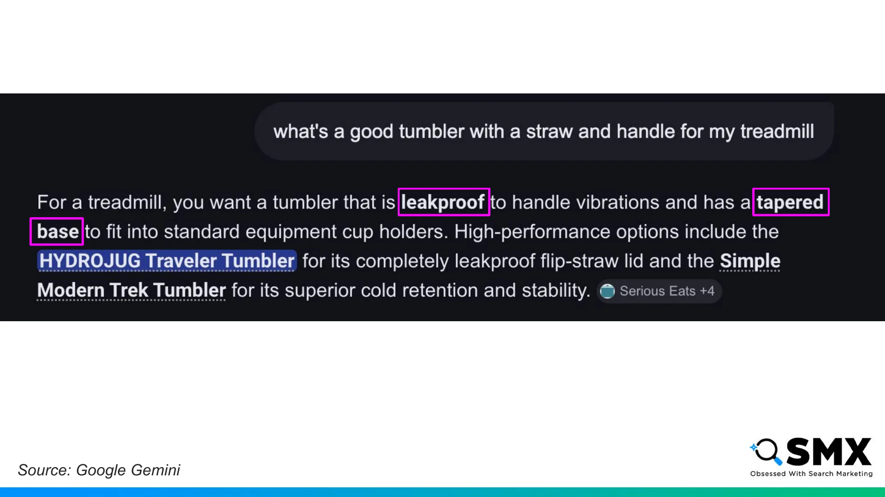
41I asked Gemini “What’s a good tumbler with a straw and handle for my treadmill?”
and notice what Google did here.
It transforms my use case - using the tumbler on a treadmill - into additional product requirements: being leakproof with a tapered base.
They suggest HydroJug’s Traveler Tumbler as a good result.
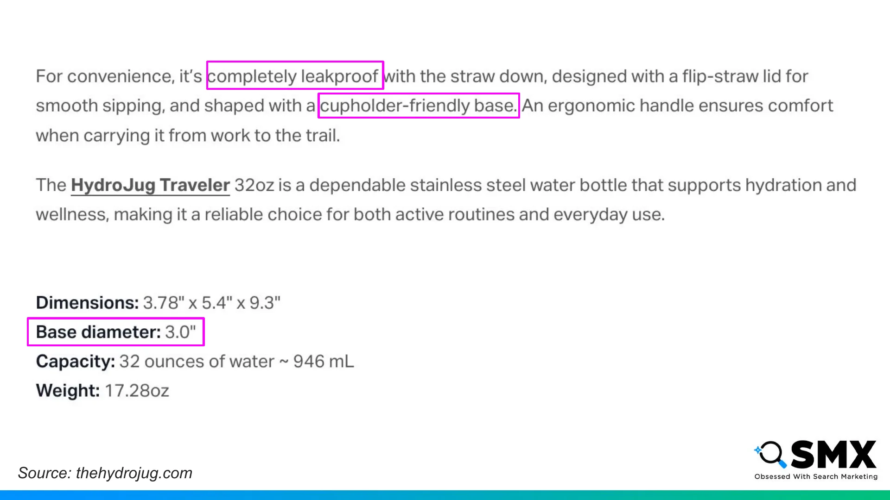
42Here’s the HydroJug product page.
They didn’t need to say, “This works for treadmills.” right on the page. Instead, they provided the building blocks an agent could use to reach that conclusion on its own.
In this case, that means saying the product is leakproof, has a cupholder-friendly base, and providing the exact base diameter in the specs.
They also mention the straw and handle on the page, which were my other requirements.
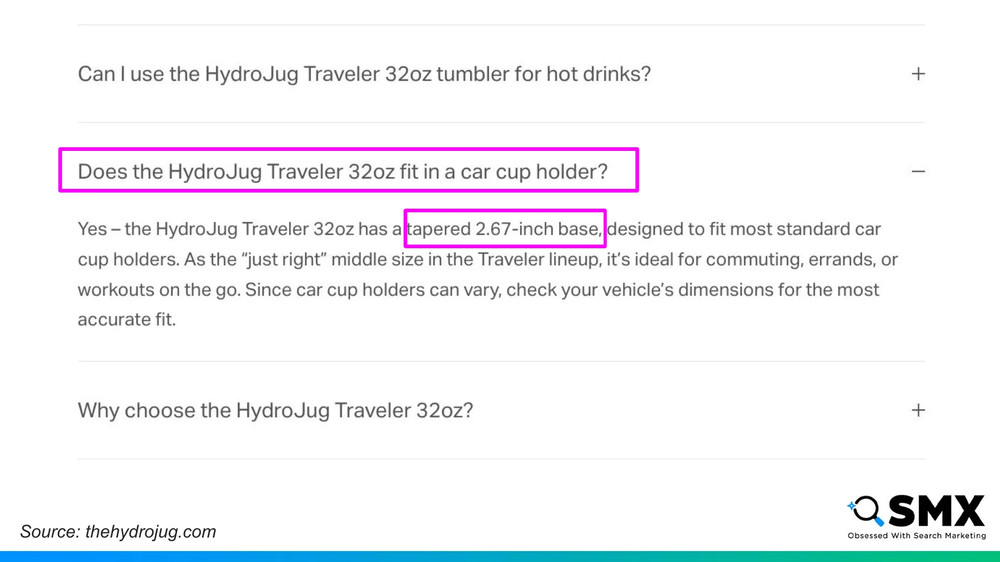
43Even after including dimensions and specs, if you know there are common use cases or FAQs related to a product, you should still include those explicitly.
Specs and dimensions act as a backstop. They help agents infer relevance, even when the answer isn’t spelled out.
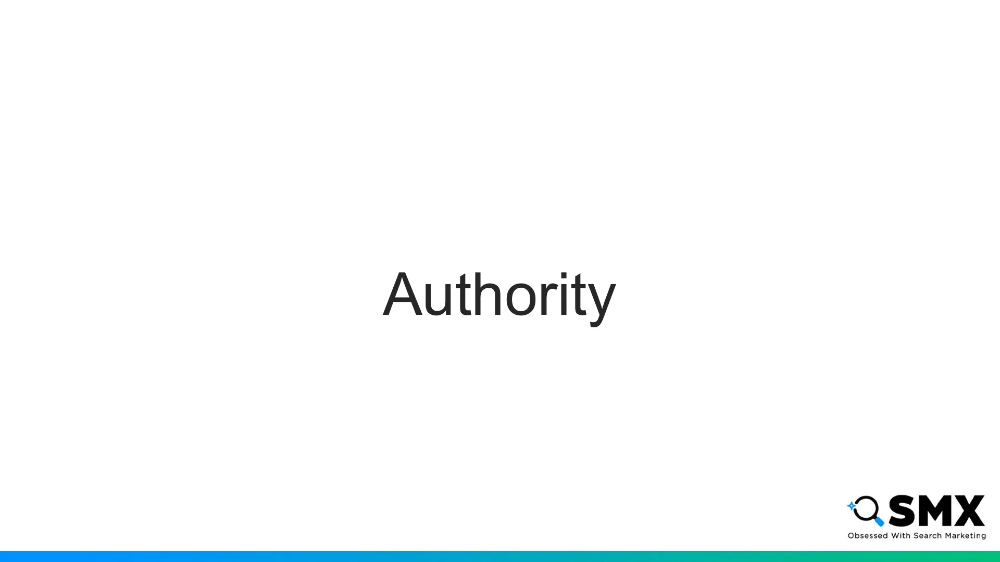
44This brings us to the final pillar of success for AI visibility: authority
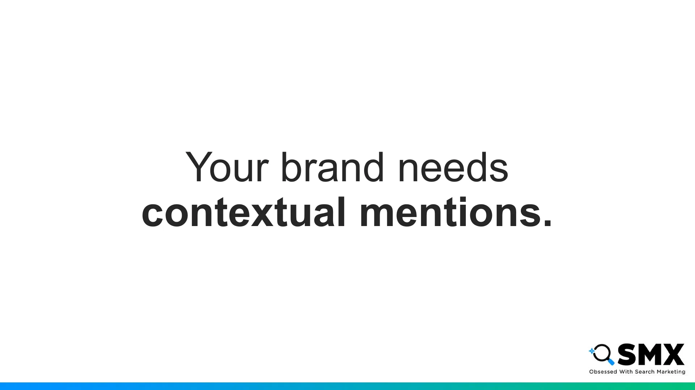
45The biggest change when looking at AI visibility is the importance of mentions. That is, other websites mentioning your brand and products.
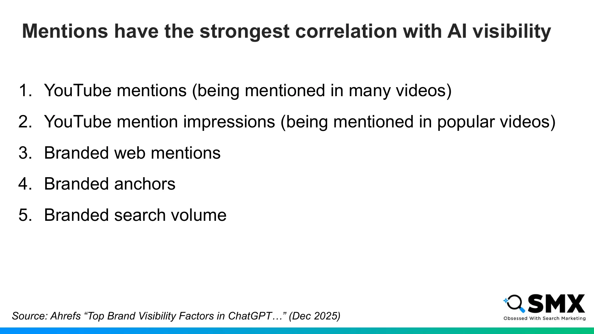
46Ahrefs published a study in December that found mentions had one of the strongest correlations with appearing in AI responses — especially YouTube mentions and broader web mentions.
This finding held true for both ChatGPT and Google AI Mode.
So you should not stop caring about links. But mentions are becoming a trust signal for AI visibility.
Even when looking at the fourth and fifth strongest factors, branded anchors and branded search volume, you still see the importance of branding. This has long been the case for SEO success and it’s a similar story when it comes to appearing in AI results too.
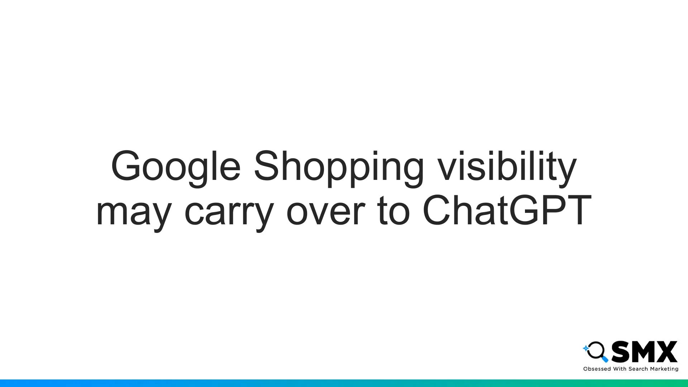
47When looking specifically at product results, some research from earlier in the year found a strong correlation between ranking in Google Shopping and ranking in ChatGPT product carousel results.
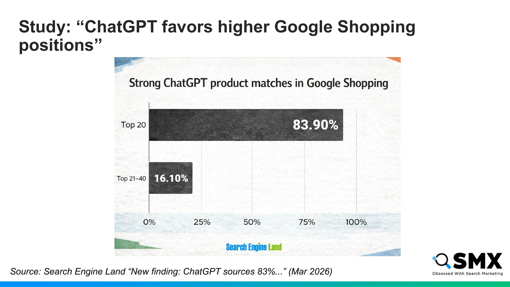
48Peec AI published this study on Search Engine Land in March, and two findings stood out.
First, ChatGPT’s product carousel appears to favor products that already rank well in Google Shopping. When a ChatGPT carousel product matched a Google Shopping result, about 84% of those matches came from the top 20 results. Only 16% came from positions 21 to 40.
So if you’re buried deeper in Google Shopping results, you may also be less likely to surface in ChatGPT product carousels.
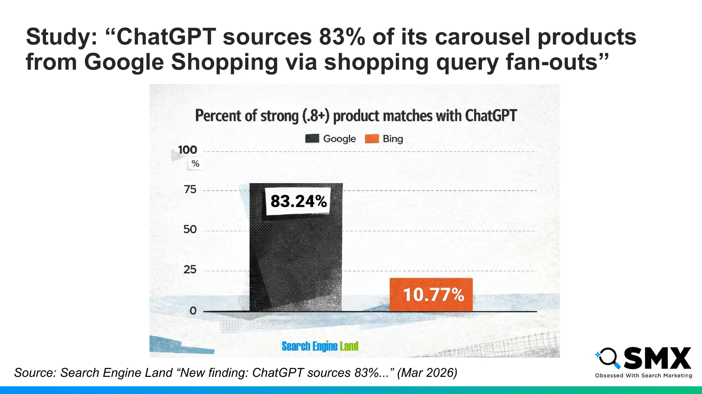
49Second, 83% of products featured in ChatGPT strongly matched products in Google Shopping, versus just 11% matching with Bing Shopping. That suggests Google was likely the main search engine ChatGPT used when sourcing products outside of OpenAI’s index.
I recommend reading the full study. The methodology is interesting, and there are more findings than I can cover here.
This does not prove ChatGPT’s pipeline will always work this way. But at the time of the study, Google Shopping visibility appeared to influence ChatGPT product carousel visibility.
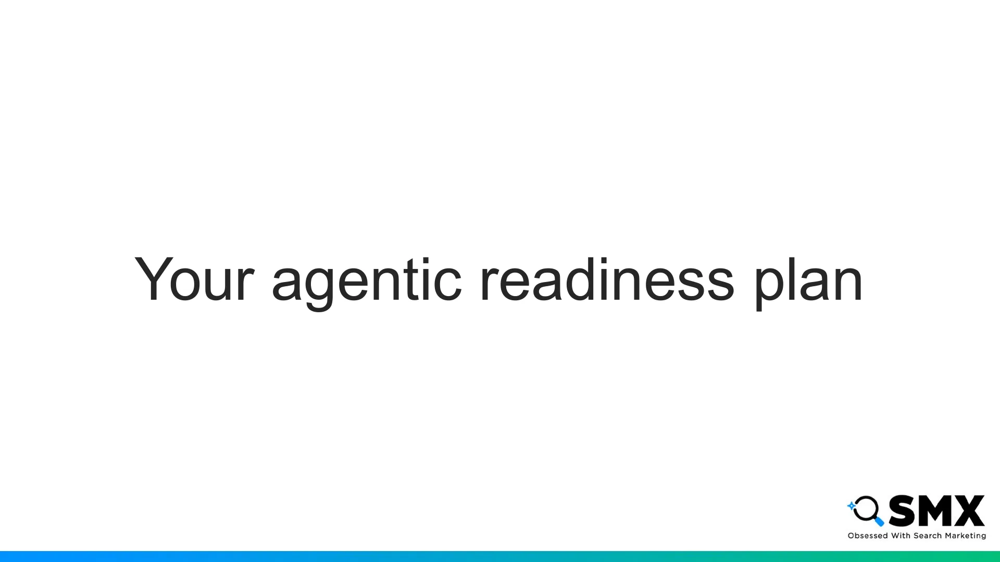
50Let’s recap with an agentic readiness plan.
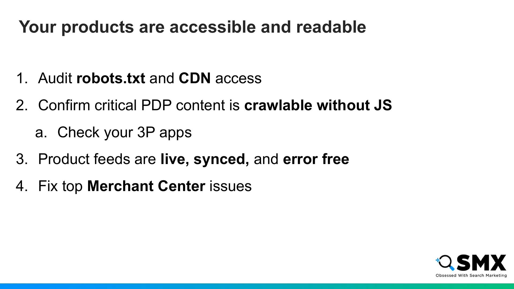
51To start, make sure AI systems can access and read your products.
Check your robots.txt and CDN rules. Don’t assume you’re fine just because Googlebot can crawl you.
Confirm that your most important PDP content is crawlable without requiring JavaScript. Be sure to double check any 3P apps rendering critical content.
Next, make sure your feeds are live, synced, and free of errors.
Finally, fix the obvious Merchant Center issues first, focusing on anything causing a disapproval or demotion
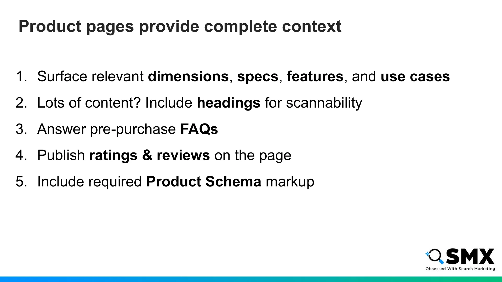
52Next: give AI systems enough context to match products to prompts.
Surface the specs, dimensions, features, and use cases that help agents match products to shopper constraints.
If you have lots of content, include descriptive headings for scannability.
If there are questions about a product that you know are common, answer those directly on the page in an FAQ section.
Make sure you’re publishing your ratings & reviews directly on the page, ideally server side.
Finally, add product schema to validate and supplement feed data.
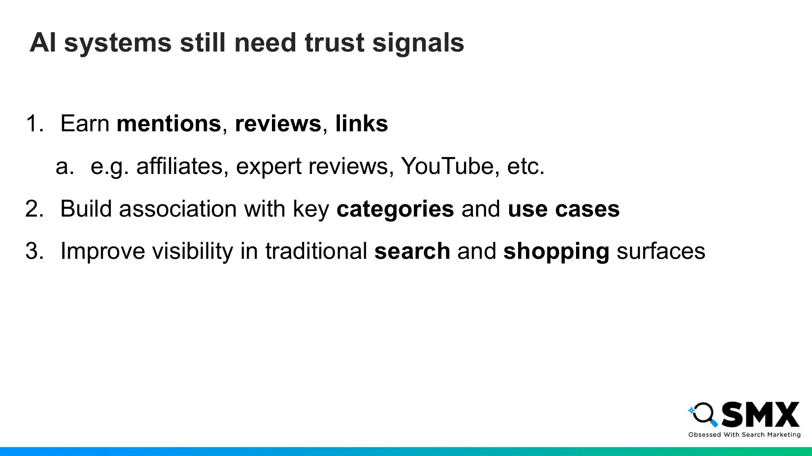
53Next, build your brand’s trust signals.
AI agents and LLM-powered search experiences still need evidence that a brand is credible, relevant, and associated with the right categories and use cases.
So a lot of the classic work still matters: earning mentions and links across trusted sources on the web, including social sites like YouTube and Reddit.
This matters because AI systems often use fan out queries to augment their answers with information from external search, shopping, and content surfaces before generating a response. If your brand does not show up in those supporting results, it is less likely to be included in an answer.
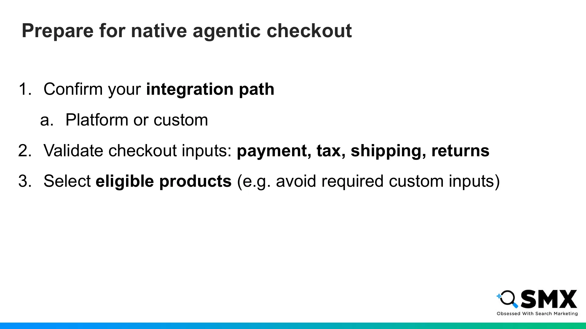
54Finally, if you want to move beyond discovery into agentic checkout, get the operational layer ready.
Most importantly, know your integration path.
If you’re on a commerce platform, check with them first. And if you’re on Shopify, a lot of this is already handled for you.
If you’re on a custom build, you’ll need to do the integration yourself and reach out to Google or OpenAI for activation.
Next, validate the inputs that create the checkout state.
That includes payment, tax and shipping logic, returns, pricing, inventory, and variants.
Again, if you’re on a commerce platform with managed checkout, a lot of this is likely handled for you.
Next, you should think carefully about which products are eligible for native agentic checkout.
Start with products that are simple to transact: evergreen, self-serve, and easy to fulfill.
Avoid anything that needs custom input from the customer like engravings or personalized products.
And that’s the playbook: make your products accessible, understandable, trusted, and ready for agentic checkout.
Thank you for your time!
And if you want to learn more about Universal Commerce Protocol, I published a free UCP explorer tool on my site.